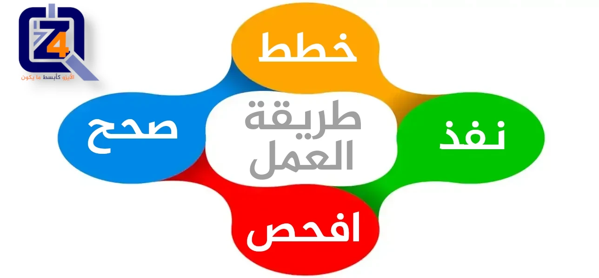
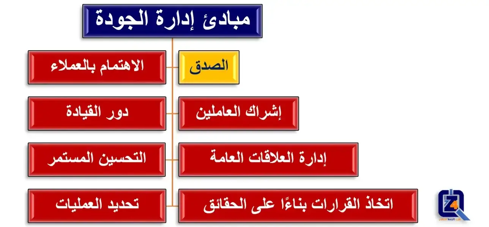

مبادئ نظام إدارة الجودة



مرحبًا بكم في موسوعة فور زد لاستشارات الجودة. نظام إدارة الجودة هو مصطلح يزيد انتشاره بشكل كبير. سواء على مستوى الشركات، أو المؤسسات، أو الهيئات العامة. لنتعمق أكثر في أهم مبادئ نظم إدارة الجودة لنتعرف عن عناصر هذا النظام، وما يجب توافره لضمان ترسيخ ثقافة الجودة واستدامتها.
1. الصدق (الأمانة):
- مع الأسف لن تجد هذا المبدأ الهام مشمولًا بأي مواصفة أو معيار من معايير الجودة العالمية. رغم أن الصدق، في اعتقادي أهم مبدأ لا ينبغي تجاهله.
- ربما يجادل البعض أن الصدق قيمة أخلاقية مجردة وليس فعل من الأفعال الملموسة التي يمكن قياسها وتقييمها. لكن بالتجربة، وهو ما يؤكده أي متمرس في كواليس أي عمل، أن الصدق هو العامل الملموس المشترك في الجودة الحقيقية لأي عمل.
- فكم من الأعمال ظاهرها الجودة وباطنها الفساد والرداءة. وكم من المؤسسات والشركات التي لا تتعدى فيها الجودة الملفات والوثائق التي لا يصدقها العمل الفعلي والسلوك العملي.
- بالطبع عندما نعني تحري الصدق فإننا لا نطالب به المؤسسة فقط، بل الهيئة التي تباشر
التقييم، والجهة المانحة لشهادات الجودة. أي كل المنظومة المرتبطة بتنفيذ وتقييم وإثبات الجودة، وإلا
فلن تتحقق الجودة الفعلية على الإطلاق.
الفوائد الرئيسية:
- زيادة مصداقية مكان العمل ومخرجاته من خدمات أو منتجات.
- ربط سلوك العاملين بقيمة أخلاقية قبل المعيار الفني، يؤدي لترسيخ مبدأ إتقان العمل بوازع داخلي.
- صدق كل المنظومة المرتبطة بالجودة يميز عاجلًا أو آجلًا المؤسسة عن غيرها التي تدعي الجودة فقط ولا تمارسها.
- كل ما سبق يصب بالتأكيد في زيادة قاعدة العملاء وولائهم ورضاهم.
الإجراءات الممكنة:
- ترسيخ مبدأ الصدق في القول والعمل داخل المؤسسة من قبل جميع الأفراد على شتى المستويات.
- التأكد من مصداقية البيانات المتوفرة، والتعامل معها بشفافية حتى تصل المؤسسة إلى تحسين الجودة فعليًا في أقصر وقت ممكن.
- ربط الثواب والعقاب بمصداقية الأفراد في تنفيذ المهام الموكلة إليهم. وإعطاء القيادة القدوة الحسنة في ذلك.
- عدم السماح مطلقًا بإطلاق دعاية والتسويق لمنتج أو خدمة تلبي معايير الجودة واحتياجات العملاء على الورق فقط .
- عدم معاقبة أو تمييز أي فرد من العاملين يرفض تمرير تلاعب أو غش يهدد مصداقية المؤسسة حتى لو كان على حساب الربح.
- النظر إلى الصدق وعوائده دائمًا على المستوى طويل الأجل وليس بضيق أفق يتعجل الربح على حساب المصداقية.
- كما يقولون الكذب ليس له أرجل، لذلك يجب توعية الجميع أن المساس بالصدق والمصداقية في الجودة لا يمكن أن تخدع العميل طويلًا.
2. الاهتمام بالعملاء:
- البؤرة الأساسية لنظام إدارة الجودة هي تلبية متطلبات العملاء، بل والسعي لتجاوز توقعاتهم.
- يتحقق النجاح المستمر، عندما تجتذب المؤسسة، وتحتفظ بثقة العملاء والأطراف المعنية الأخرى.
- يساهم فهم الاحتياجات الحالية والمستقبلية للعملاء والأطراف المعنية الأخرى، في استمرار
نجاح المؤسسة.
الفوائد الرئيسية:
- زيادة قيمة وقواعد ورضاء وانتماء العملاء.
- تحسين سمعة المؤسسة وتكرار الأعمال الناجحة.
- زيادة الإيرادات والحصة السوقية.
الإجراءات الممكنة:
- التعرف على العملاء المباشرين وغير المباشرين، باعتبارهم أولئك الذين يتلقون خدمة أو منتج من المؤسسة.
- فهم احتياجات وتوقعات العملاء الحالية والمستقبلية.
- ربط أهداف المؤسسة باحتياجات العملاء وتوقعاتهم.
- احتياجات العملاء وتوقعاتهم، يجب أن يكون معلومًا لجميع من في المؤسسة.
- تخطيط، وتصميم، وتطوير، وإنتاج، وتوفير، ودعم المنتجات والخدمات، يكون دائمًا لتلبية احتياجات العملاء وتوقعاتهم.
- قياس ومراقبة رضاء العملاء، واتخاذ الإجراءات المناسبة.
- تحديد واتخاذ إجراءات بشأن احتياجات الأطراف المعنية ذات الصلة، والتوقعات المناسبة التي يمكن أن تؤثر على رضاء العملاء.
- إدارة العلاقات مع العملاء بفاعلية واهتمام، لتحقيق النجاح المستمر.
3. دور القيادة:
- يؤسس القادة بجميع المستويات، لوحدة الهدف والتوجيه.
- يخلق القادة الظروف المثالية، التي يتفاعل فيها العاملين لتحقيق أهداف الجودة للمؤسسة.
- تأسيس ورعاية وحدة الهدف والتوجيه وإشراك العاملين من قبل القادة يمكّن المؤسسة من
مواءمة استراتيجياتها، وسياساتها، وعملياتها، ومواردها، لتحقيق أهدافها.
الفوائد الرئيسية:
- زيادة الفعالية والكفاءة في تحقيق أهداف الجودة المرجوة للمؤسسة.
- تنسيق أفضل لعمليات المؤسسة.
- تحسين التواصل بين المستويات المختلفة للقيادة والموظفين داخل المؤسسة.
الإجراءات الممكنة:
- مهمة المؤسسة، ورؤيتها، واستراتيجيتها، وسياساتها، وعملياتها، يجب أن يكون معلومًا لجميع من في المؤسسة.
- تحديد القيم المشتركة، والميثاق الأخلاقي للسلوك والحفاظ عليه، وتعميمه على جميع مستويات المؤسسة.
- ترسيخ ثقافة الثقة والنزاهة.
- تشجيع الالتزام بالجودة على مستوى المؤسسة.
- التأكد من أن القادة على جميع المستويات، هم أمثلة إيجابية وقدوة في المؤسسة.
- تزويد العاملين بالموارد المطلوبة والتدريب والتفويض اللازم للعمل، مع وجود آلية للمساءلة.
- إلهام، وتشجيع، وتقدير مساهمة العاملين.
4. التحسين المستمر:
- المؤسسات الناجحة لديها اهتمام مستمر بالتحسين.
- تحسين المستوى ضروري لأي مؤسسة. وذلك للحفاظ على المستويات الحالية للأداء. وللإستجابة
للتغيرات الحتمية بالظروف الداخلية والخارجية، ولخلق فرص جديدة.
الفوائد الرئيسية:
- تحسين أداء العمليات، والقدرة التنظيمية، ورضاء العملاء.
- زيادة التركيز على التحقيق في، وتحديد الأسباب الجذرية لأي مكامن ضعف، ثم اتباع الإجراءات التصحيحية والوقائية.
- تعزيز القدرة على توقع المخاطر والفرص الداخلية والخارجية، والاستجابة لها.
- تعزيز روح الابتكار، واستخدام التعلم من أجل التحسين المستمر.
الإجراءات الممكنة:
- التعرف على أوجه التحسين والاعتراف بأهميته.
- وضع أهداف التحسين على القائمة، في جميع مستويات المؤسسة.
- تثقيف وتدريب العاملين بجميع المستويات، على كيفية تطبيق الأدوات والمنهجيات الأساسية اللازمة لتحقيق أهداف التحسين.
- التأكد من أن العاملين مؤهلين لتنفيذ، وإكمال مشاريع التحسين بنجاح.
- تطوير ونشر العمليات اللازمة لتنفيذ مشاريع التحسين في جميع أنحاء المؤسسة.
- تتبع، وراجع، ودقق في تخطيط، وتنفيذ، وإتمام، ونتائج مشاريع التحسين.
- دمج سياسات التحسين في تطوير المنتجات، والخدمات، والعمليات الجديدة أو المعدلة.
5. تحديد العمليات:
- يتم تحقيق النتائج المتسقة والقابلة للتنبؤ، بشكل أكثر فعالية وكفاءة، عندما يتم فهم الأنشطة وإدارتها كعمليات مترابطة، تعمل بالنهاية كنظام متماسك.
- يتكون نظام إدارة الجودة من عمليات مترابطة، وفهم كيفية الحصول على النتائج بواسطة هذا
النظام، يمكّن المؤسسة من تحسين النظام وأداءه.
الفوائد الرئيسية:
- تعزيز القدرة على تركيز الجهود على العمليات الرئيسية وفرص التحسين.
- نتائج متسقة، ويمكن التنبؤ بها من خلال نظام من العمليات المتوافقة.
- الأداء الأمثل من خلال الإدارة الفعالة للعمليات والاستخدام الفعال للموارد، وتقليل العثرات والعقبات.
- تمكين المؤسسة من توفير الثقة للأطراف المعنية فيما يتعلق باتساقها، وفعاليتها، وكفاءتها.
الإجراءات الممكنة:
- تحديد أهداف النظام والعمليات اللازمة لتحقيقها.
- إرساء التفويض، والمسؤولية، والمساءلة لإدارة تلك العمليات.
- فهم قدرات المؤسسة، وتحديد الموارد قبل بدء العمل.
- تحديد العمليات المتقاطعة، وتحليل تأثير التعديلات بالعمليات المختلفة، على النظام ككل.
- إدارة العمليات المختلفة كنظام متكامل، لتحقيق أهداف جودة المؤسسة بفعالية وكفاءة.
- التأكد من توافر المعلومات الضرورية لتشغيل، وتحسين العمليات، ورصد، وتحليل، وتقييم أداء النظام ككل.
- إدارة المخاطر التي يمكن أن تؤثر على مخرجات العمليات والنتائج العامة لنظام إدارة الجودة.
6. إشراك العاملين:
- القوى العاملة الفعالة وذات الكفاءة، والتي تمتلك تفويضًا واسعًا للعمل بجميع أنحاء المؤسسة، لا غنى عنها لتعزيز قدرة المؤسسة على خلق وتقديم مستوى ذو جودة عالية.
- من أجل إدارة المؤسسة بفعالية وكفاءة، من المهم احترام، وإشراك جميع القوى العاملة بجميع المستويات.
- الاعتراف، والتمكين، وتعزيز كفاءة العاملين، تساهم في مشاركتهم الفعالة في تحقيق أهداف
الجودة للمؤسسة.
الفوائد الرئيسية:
- تحسين فهم العاملين بالمؤسسة لأهداف جودة المؤسسة، وزيادة الدافع لتحقيقها.
- تعزيز مشاركة العاملين في أنشطة التحسين.
- تعزيز التنمية الشخصية، والمبادرات، وإبداع العاملين.
- تعزيز رضاء العاملين.
- تعزيز الثقة والتعاون بين العاملين في جميع أنحاء المؤسسة.
- زيادة الاهتمام بالقيم، والثقافة المشتركة بين العاملين في جميع أنحاء المؤسسة.
الإجراءات الممكنة:
- التواصل مع العاملين لتعزيز فهم أهمية مساهماتهم الفردية.
- تعزيز التعاون بين العاملين في جميع أنحاء المؤسسة.
- تسهيل المناقشات المفتوحة، وتبادل المعرفة والخبرة بين العاملين.
- تمكين العاملين من تحديد قيود الأداء، وإطلاق المبادرات دون خوف.
- الاعتراف والتقدير لمساهمة العاملين واهتمامهم بالتعلم والتحسين.
- إجراء استبيانات لتقييم رضاء العاملين، وإبلاغ النتائج لمن يهمه الأمر، واتخاذ الإجراءات المناسبة.
7. إدارة العلاقات:
- لتحقيق النجاح المستمر، تدير المؤسسات علاقاتها مع الأطراف المعنية ذات الصلة، مثل الموردين.
- تؤثر العلاقات مع الأطراف المعنية ذات الصلة على أداء المؤسسة.
- من المرجح أن يتحقق النجاح المستمر عندما تدير المؤسسة العلاقات مع جميع الأطراف المعنية وتدفعها لتحسين خدماتها. وبالتالي تحسين أداء المؤسسة.
- تعتبر إدارة العلاقات مع الموردين، وشبكات الشركاء ذات أهمية خاصة.
الفوائد الرئيسية:
- تحسين أداء المؤسسة، والأطراف المعنية من خلال الاستجابة للفرص والمخاطر، المتعلقة بكل طرف معني.
- الفهم المشترك للأهداف والقيم بين الأطراف المعنية.
- زيادة القدرة على خلق فوائد للأطراف المعنية، من خلال تقاسم الموارد، والكفاءات، وإدارة المخاطر المتعلقة بالجودة.
- سلسلة إمداد مدارة بشكل جيد، توفر تدفقًا مستقرًا للمنتجات والخدمات.
الإجراءات الممكنة:
- تحديد الأطراف المعنية ذات الصلة، وتحديد علاقتهم بالمؤسسة.
- أمثلة للأطراف المعنية: الموردين، الشركاء، العملاء، المستثمرين، الموظفين، أو المجتمع ككل.
- تحديد وترتيب أولويات العلاقات مع الأطراف المعنية، التي يجب إدارتها.
- إقامة علاقات مع الأطراف المعنية، توازن بين المكاسب قصيرة الأجل، والاعتبارات طويلة الأجل.
- جمع وتبادل المعلومات والخبرات والموارد، مع الأطراف المعنية ذات الصلة.
- قياس الأداء وتقديم ملاحظات الأداء إلى الأطراف المعنية، حسب الحاجة، لتعزيز مبادرات التحسين.
- إقامة أنشطة تطوير وتحسين التعاون مع الموردين والشركاء، والأطراف المعنية الأخرى.
- تشجيع، والاعتراف بالتحسينات وإنجازات الأطراف المعنية، كالموردين والشركاء.
8. اتخاذ القرارات بناءًا على الحقائق:
- القرارات المستندة إلى تحليل، وتقييم البيانات والمعلومات، من المرجح أن تؤدي إلى النتائج المرجوة.
- عملية صنع القرار، يمكن أن تكون عملية معقدة. ودائما ما تنطوي على القليل من عدم اليقين. وغالبًا ما تتضمن مصادر متعددة للمعلومات، بالإضافة إلى تفسيراتها المختلفة، والتي يمكن أن تكون غير موضوعية.
- من المهم فهم علاقات السبب، والنتيجة، والعواقب المحتملة لكل القرارات.
- الحقائق والأدلة وتحليل البيانات، تؤدي إلى مزيد من الموضوعية والثقة في اتخاذ القرار.
الفوائد الرئيسية:
- تحسين عمليات صنع القرار.
- تحسين تقييم أداء العمليات والقدرة على تحقيق الأهداف.
- تحسين الفاعلية والكفاءة التشغيلية.
- زيادة القدرة على مراجعة وتحدي وتغيير الآراء والقرارات.
- زيادة القدرة على إثبات فاعلية القرارات السابقة.
الإجراءات الممكنة:
- تحديد وقياس ومراقبة المؤشرات الرئيسية، لتقييم أداء المؤسسة.
- إتاحة جميع البيانات اللازمة للأشخاص المعنيين.
- التأكد من أن البيانات والمعلومات دقيقة وموثوقة وآمنة، بما يكفي للاعتماد عليها.
- تحليل وتقييم البيانات والمعلومات باستخدام الأساليب المناسبة.
- التأكد من أن العاملين مؤهلين لتحليل البيانات وتقييمها حسب الحاجة، وحسب موقعهم بالمؤسسة.
- صنع القرارات واتخاذ الإجراءات، يجب أن يكون على أساس الأدلة والبراهين، رغم ذلك يجب أن يتوازن أيضًا، مع كل من الخبرة والحدس.
فيما يلي نظرة سريعة على مبادئ نظام إدارة الجودة:
إذا أردتم معرفة المزيد حول إدارة الجودة، أو رغبتم في تنظيم ورشة عمل لموظفيكم حول مبادئ وأهداف وفوائد تطبيقه، يمكنكم التواصل معنا، بإرسال بريدًا إلكترونيًا على العنوان التالي: support@the4z.com. نرد على استفساراتكم على الفور وبكل وضوح.
أو الإتصال اليوم بشركة فور زد للجــودة على رقم (أيضًا واتساب):
0097333995807 أو 00905050304016.
موضوعات أخرى:
- اعتماد جودة التعليم
- مراحل اعتماد الأيزو
- معايير الأيزو الدولية
- نظم إدارة الجودة
- مفهوم إدارة الجودة
- هل أنت جاهز لشهادة الأيزو؟
- التخطيط الاستراتيجي
فيديوهات:
روابط خارجية:
اقتباسات عن الجودة:
- إذا كنت لا تستطيع شرح (شيء ما) بشكل مبسط، فأنت لم تفهم (هذا الشيء) بما فيه الكفاية بعد